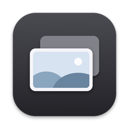

Copied the moment you let go
Select an area with ⌥⇧S, press Space to pick a window instead, or take the whole screen with ⌥S.

SidesnapFree · Version 1.0 · 2.4 MB · Apple silicon & Intel · macOS 14 Sonoma or later · No account, no personal data
Press ⌥⇧S, or click the Sidesnap icon in the menu bar. Then point at the right edge.
Select an area with ⌥⇧S, press Space to pick a window instead, or take the whole screen with ⌥S.
Your shots wait at the right edge of the screen. Point at it, then drag one or several into Slack, Mail or Finder.
Search the text inside every screenshot, or grab text and QR codes straight off the screen with ⌥⇧T.
Arrows, boxes, text, speech bubbles, blur, highlights and numbered steps. Your marks stay editable.
They're kept in a folder on your Mac and cleared after 30 days, unless you pin them. Even reading the words inside them happens on your Mac.
No sign-up, no analytics, nothing sent about you or what you capture.
Once a day Sidesnap fetches a small file to see if there's a new version. You can turn that off in Settings.
Screen access is used only when you press a capture shortcut. Pause the shelf any time, and captures go to the clipboard only.
About this website: it counts downloads of Sidesnap as a plain number per day. Nothing about you is stored (no IP address, no browser details, no cookies).
Sidesnap is free and not signed through Apple's paid developer program, so macOS asks you to confirm it once.
Open Sidesnap.dmg and drag Sidesnap onto the Applications folder.
Open Sidesnap once. Then in System Settings → Privacy & Security, click Open Anyway.
Let Sidesnap see the screen when you capture, then press ⌥⇧S.
Yes. No trial, no ads, no in-app purchases.
Yes. The code is on GitHub under the MIT licence, so you can check exactly what it does with your screen.
macOS only lets an app capture the screen with your permission. Sidesnap uses it only when you press a capture shortcut. See Privacy.
Apps outside the App Store are checked against a paid Apple developer account. Sidesnap is free and doesn't have one yet, so macOS asks you to confirm. Follow the install steps.
Onto the shelf and your clipboard, never your Desktop. They're cleared after 30 days unless you pin them; you can change that in Settings, or save any one as a file.
Yes, in Settings › Shortcuts. The defaults are ⌥⇧S for an area, ⌥S for the whole screen and ⌥⇧T to copy text.
Click Quit Sidesnap in its menu, drag Sidesnap from Applications to the Trash, and if you like, delete the folder ~/Library/Application Support/Sidesnap where the shelf lives.